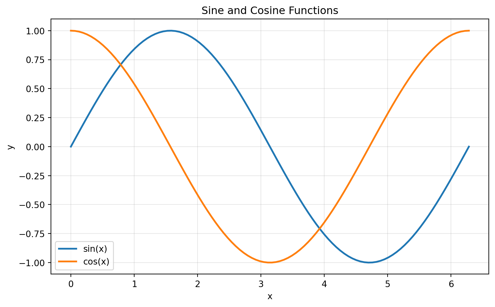
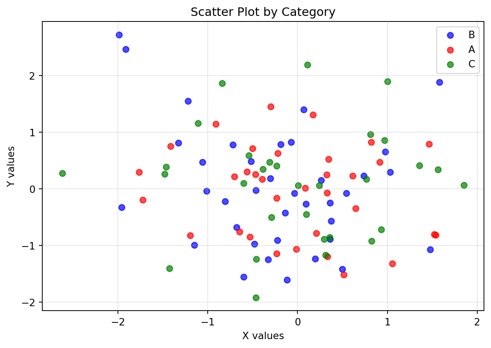
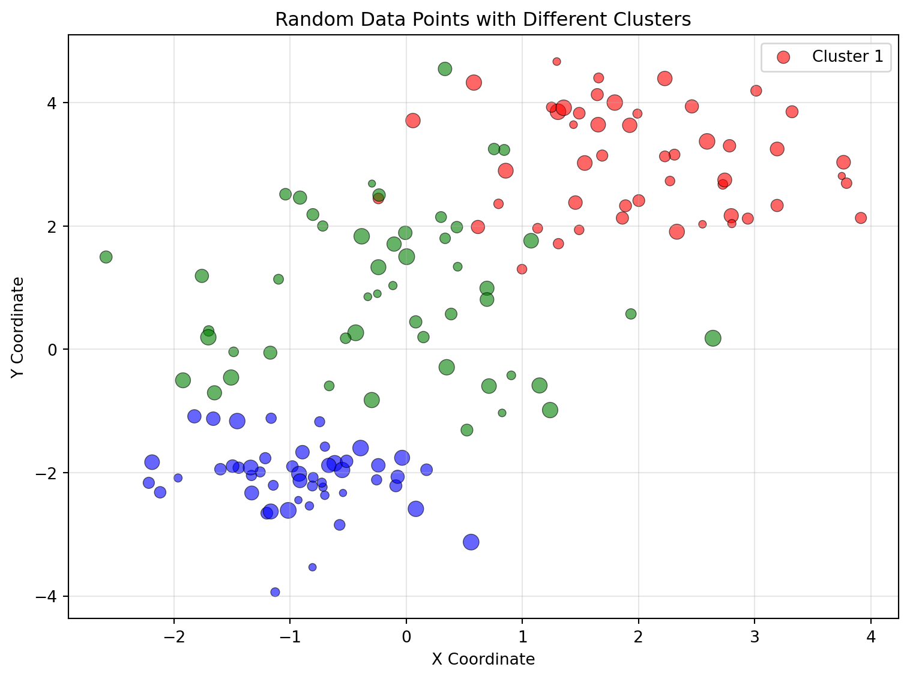
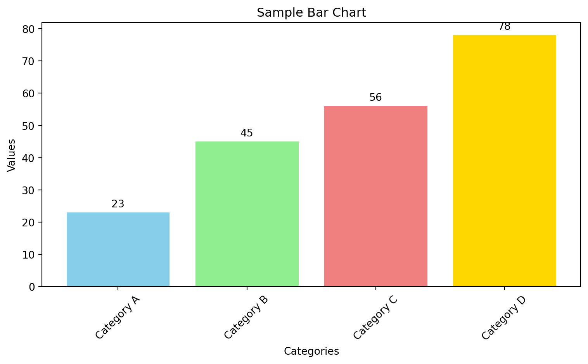
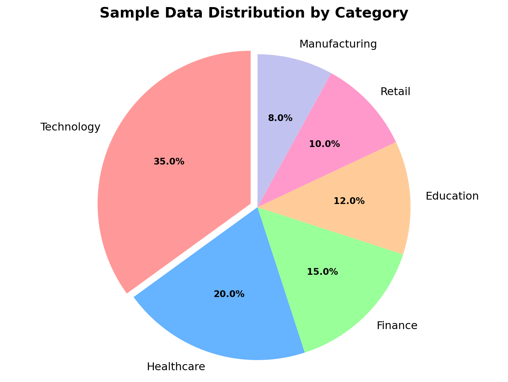

This document demonstrates how to create and publish matplotlib visualizations using Quarto. We’ll create several example plots and render them to HTML.
What is Matplotlib?
Matplotlib is a comprehensive Python library for creating static, animated, and interactive visualizations. It’s one of the most popular plotting libraries in the Python ecosystem and serves as the foundation for many other visualization tools.
Why Matplotlib is Useful:
Versatility: Supports a wide range of plot types including line plots, scatter plots, bar charts, histograms, pie charts, and more
Publication Quality: Produces high-quality figures suitable for academic papers, presentations, and reports
Customization: Highly customizable with fine-grained control over every aspect of the plot
Integration: Works seamlessly with NumPy, Pandas, and other scientific Python libraries
Cross-Platform: Consistent output across different operating systems and environments
Professional Standards: Industry-standard library used by data scientists, researchers, and analysts worldwide
Simple Line Plot
Let’s start with a basic line plot:
Code
import matplotlib.pyplot as pltimport numpy as np# Create datax = np.linspace(0, 2*np.pi, 100)y1 = np.sin(x)y2 = np.cos(x)# Create the plotplt.figure(figsize=(8, 5))plt.plot(x, y1, label='sin(x)', linewidth=2)plt.plot(x, y2, label='cos(x)', linewidth=2)plt.xlabel('x')plt.ylabel('y')plt.title('Sine and Cosine Functions')plt.legend()plt.grid(True, alpha=0.3)plt.tight_layout()plt.show()

Figure 1: Simple line plot showing sine and cosine functions
Scatter Plot with Data
Here’s a scatter plot using pandas data:
Code
import pandas as pdimport numpy as np# Generate random datanp.random.seed(42)n_points =100data = pd.DataFrame({'x': np.random.randn(n_points),'y': np.random.randn(n_points),'category': np.random.choice(['A', 'B', 'C'], n_points)})# Create scatter plotplt.figure(figsize=(7, 5))colors = {'A': 'red', 'B': 'blue', 'C': 'green'}for category in data['category'].unique(): subset = data[data['category'] == category] plt.scatter(subset['x'], subset['y'], c=colors[category], label=category, alpha=0.7)plt.xlabel('X values')plt.ylabel('Y values')plt.title('Scatter Plot by Category')plt.legend()plt.grid(True, alpha=0.3)plt.tight_layout()plt.show()

Figure 2: Scatter plot showing random data points
Additional Random Scatter Plot
Here’s another scatter plot with different random data points:
Code
import matplotlib.pyplot as pltimport numpy as np# Generate random data with different distributionsnp.random.seed(123)n_points =150# Create three clusters of random datax1 = np.random.normal(2, 0.8, 50)y1 = np.random.normal(3, 0.8, 50)x2 = np.random.normal(-1, 0.6, 50)y2 = np.random.normal(-2, 0.6, 50)x3 = np.random.normal(0, 1.2, 50)y3 = np.random.normal(1, 1.2, 50)# Combine all datax_all = np.concatenate([x1, x2, x3])y_all = np.concatenate([y1, y2, y3])colors = ['red'] *50+ ['blue'] *50+ ['green'] *50sizes = np.random.uniform(20, 100, 150)# Create the scatter plotplt.figure(figsize=(8, 6))plt.scatter(x_all, y_all, c=colors, s=sizes, alpha=0.6, edgecolors='black', linewidth=0.5)plt.xlabel('X Coordinate')plt.ylabel('Y Coordinate')plt.title('Random Data Points with Different Clusters')plt.grid(True, alpha=0.3)plt.legend(['Cluster 1', 'Cluster 2', 'Cluster 3'], loc='upper right')plt.tight_layout()plt.show()

Figure 3: Scatter plot with random data points and different colors
Bar Chart
A simple bar chart example:
Code
# Sample datacategories = ['Category A', 'Category B', 'Category C', 'Category D']values = [23, 45, 56, 78]# Create bar chartplt.figure(figsize=(8, 5))bars = plt.bar(categories, values, color=['skyblue', 'lightgreen', 'lightcoral', 'gold'])plt.xlabel('Categories')plt.ylabel('Values')plt.title('Sample Bar Chart')plt.xticks(rotation=45)# Add value labels on barsfor bar, value inzip(bars, values): plt.text(bar.get_x() + bar.get_width()/2, bar.get_height() +1, str(value), ha='center', va='bottom')plt.tight_layout()plt.show()

Figure 4: Bar chart showing sample data
Pie Chart with Sample Data
Here’s a pie chart showing sample data distribution:
Code
import matplotlib.pyplot as plt# Sample data for different categoriescategories = ['Technology', 'Healthcare', 'Finance', 'Education', 'Retail', 'Manufacturing']values = [35, 20, 15, 12, 10, 8]colors = ['#ff9999', '#66b3ff', '#99ff99', '#ffcc99', '#ff99cc', '#c2c2f0']# Create pie chartplt.figure(figsize=(8, 6))wedges, texts, autotexts = plt.pie(values, labels=categories, colors=colors, autopct='%1.1f%%', startangle=90, explode=(0.05, 0, 0, 0, 0, 0))# Customize the appearanceplt.setp(autotexts, size=10, weight="bold")plt.setp(texts, size=12)# Add titleplt.title('Sample Data Distribution by Category', fontsize=16, fontweight='bold', pad=20)# Equal aspect ratio ensures that pie is drawn as a circleplt.axis('equal')plt.tight_layout()plt.show()

Figure 5: Pie chart showing sample data distribution
This document demonstrates various matplotlib visualizations that can be easily rendered to HTML using Quarto. The plots are interactive and will display beautifully in the final HTML output.
To render this document to HTML, use the command:
quarto render index.qmd
Or in VS Code, you can use the Quarto extension to render with a single click.